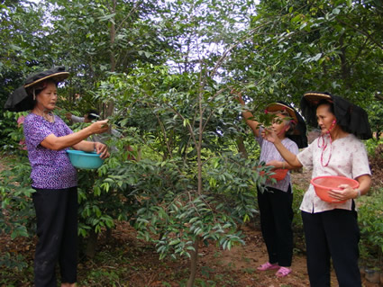

大岭山镇鸡翅岭村被广东省文学艺术界联合会、广东省民间文艺家协会授予“广东省莞香（女儿香）文化之乡”荣誉称号。从2006年起，鸡翅岭村便规划将后山300亩林地与盆景协会种植园地，拥有100多种稀有古树的风水林合并起来，打造成一个集园林绿化、休闲、旅游为一体的生态型女儿香公园。目前，已经由香农自发建造两个颇有规模的莞香种植基地，总面积约100亩，培育香苗、香树共计约几十万株。还计划将双旗鼓、坑仔尾、坑尾川一带约1000多亩的山地全部种植莞香，建造一个大规模的莞香生态园林，作为莞香的培植和开发园区。
镇鸡翅岭村77岁高龄的老人汤焕洪，祖辈都种植莞香，十多岁就跟着父亲种植、开凿、售卖莞香，对莞香怀有特别的感情。几十年来勤耕不缀，十多年前又在其村后山坡辟荒垦地种植莞香树，现香树已高达5—6米、除被一些林业部门和有关单位移植，尚存近百棵，成为东莞目前较大的香林，他还精心育莞香苗提供给热心的单位和人士栽种，为重振莞香不遗余力。
同时，鸡翅岭村将建设一个“女儿香”陈列馆，对“女儿香”的历史、文化、用途、价值等各方面信息进行展示说明，并把陈列馆打造成为展示研究学者对“女儿香”的研究和交流成果的重要窗口。

大岭山莞香种植基地内
【关于莞香】莞香又名白木香、牙香树、土沉香，为瑞香科沉香属乔木，属国家二级保护植物，是在中国树木中唯一以东莞地方命名的树木。燃点时清香飘逸，不见烟雾缭绕，但闻香气撩人，供清赏及祀神，有去潮避秽之功，深受大众欢迎 。自明代中叶起，不单列为内庭贡品、香飘中国，且远播东南亚等国六百余年。莞香在古时代已价格不菲，据《广东新语》所载：“当莞香盛时，岁售逾数万金。……莞人多以香起家。”可见当时莞香在东莞商贸上的重要地位。即使在今天，中等的“白木香”，常见的“镰头香”每公斤也需20多元。“沉香”“牙香”（女儿香）则价值更高了。莞香在唐朝已传入广东，宋朝普遍种植，由于产地主要集中于东莞地区，故而又名莞香。
莞香树是常绿乔木，树皮暗褐色，易剥落。叶薄，草质，光亮，卵形，通常不超过10厘米，有两种大小。大者称大叶香，为长卵形；小叶称细叶香，为披针形，互生，两端尖，长五厘米许，青绿色。花白色。种子圆形、黑色。花莞香树种子马牙状莞香成品期三月份至四月份，种子成熟期六月份。本种生长六、七年后伐其正干，后越五、六年，乃凿香头如马牙状，通称“牙香”。花小，芳香，黄绿色，几朵或多朵结成腋生伞形状花序。蒴果似连翘，长约2厘米。花期为每年3月至4月，种子成熟期在6月。成熟种子圆形，黑色。从育种、培植，到小苗长大成树，须6至7年时间。莞香长成大树一般为8米至15米高，枝繁叶茂，郁郁葱葱。莞香树生长于亚热带地区，土层深厚，土质肥沃湿润。莞香树苗一次移植成活率低，须二次或三次假植，形成宿根，丰富其根系后再到目的地种植。成树之莞香，乃凿香头如马牙状，取其木块，即为成品。第一次凿采木香，称“开香门”，每年农历12月是凿采木香的季节，是在活树上凿取。采凿的木香依质地分为“白木香”、“镰头香”、“沉香”、“牙香”（又名女儿香）。
莞香（树）是东莞特有的珍贵特产，品位高、经济价值大，自元明两代以来在东莞已是内庭贡品。故而当时莞邑地区广泛种植，但以大岭山最为出名。2005年，在开展植树造林和打造生态绿城的进程中，大岭山采取一系列措施保护东莞的特有树种——莞香，在大岭山森林公园内开辟了莞香种植基地，占地200亩，种植有莞香树3000多株，全部是大岭山的政府干部亲自带领下在植树节当天种下的。今天，这些莞香树漫山遍野，长势喜人，香飘四溢。香飘四季的莞香基地成为大岭山森林公园的一道亮丽风景和旅游亮点。保护莞香这稀有的地方特种植物，将莞香作为标志性植物大量繁育推广种植。